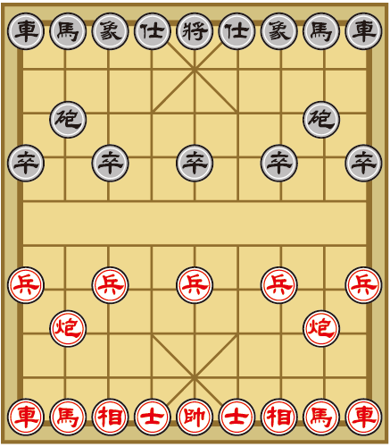
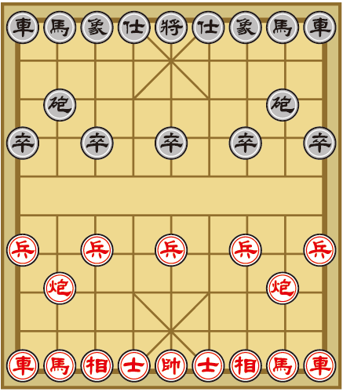

Learn To Play XiangQi / Chinese Chess
Learn To Play XiangQi / Chinese Chess
Brief Information
The board is composed of 9 vertical lines (files) and 10 horizontal lines (ranks) with the pieces being played on the intersections. On each side of the board against the back edge is a palace, which is 3 by 3 lines (9 positions) with four diagonal lines that extend outward from the center forming an “X” shape. Dividing the two opposing sides of the board is a river, located between the fifth and sixth ranks. The river is often marked with the Chinese characters, 楚河 “Chǔ Hé” meaning "Chu River", and 漢界 (汉界 in simplified Chinese), “Hàn Jiè”, meaning "Han border", a reference to the Chu-Han War. Some boards have the starting points of soldiers marked with small crosses.
Arrangment
The starting positions of the pieces are arranged as shown below.

Brief Information
The board is composed of 9 vertical lines (files) and 10 horizontal lines (ranks) with the pieces being played on the intersections. On each side of the board against the back edge is a palace, which is 3 by 3 lines (9 positions) with four diagonal lines that extend outward from the center forming an “X” shape. Dividing the two opposing sides of the board is a river, located between the fifth and sixth ranks. The river is often marked with the Chinese characters, 楚河 “Chǔ Hé” meaning "Chu River", and 漢界 (汉界 in simplified Chinese), “Hàn Jiè”, meaning "Han border", a reference to the Chu-Han War. Some boards have the starting points of soldiers marked with small crosses.
Arrangment
The starting positions of the pieces are arranged as shown below.

Test Yourself With Exercises
Q. There are totally 32 pieces.
Q. There are totally 32 pieces.
True! One side are 16 pieces, and totally 32 pieces.